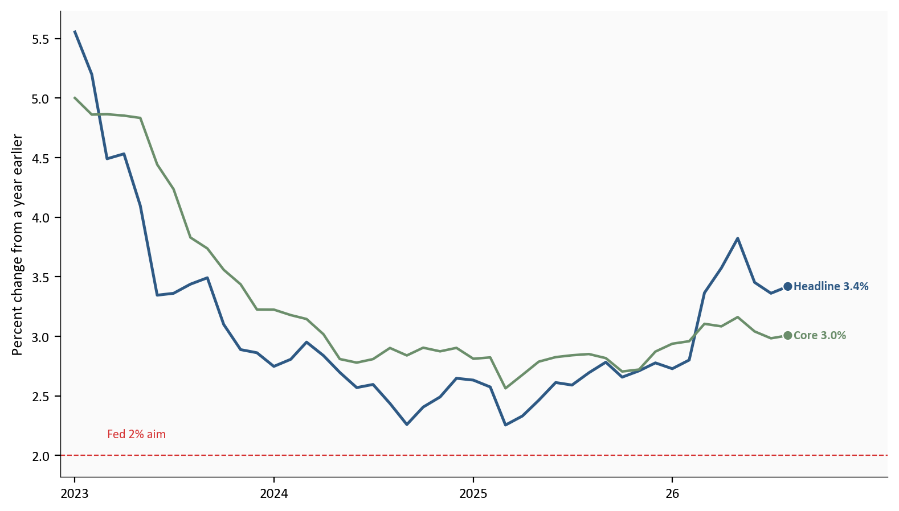
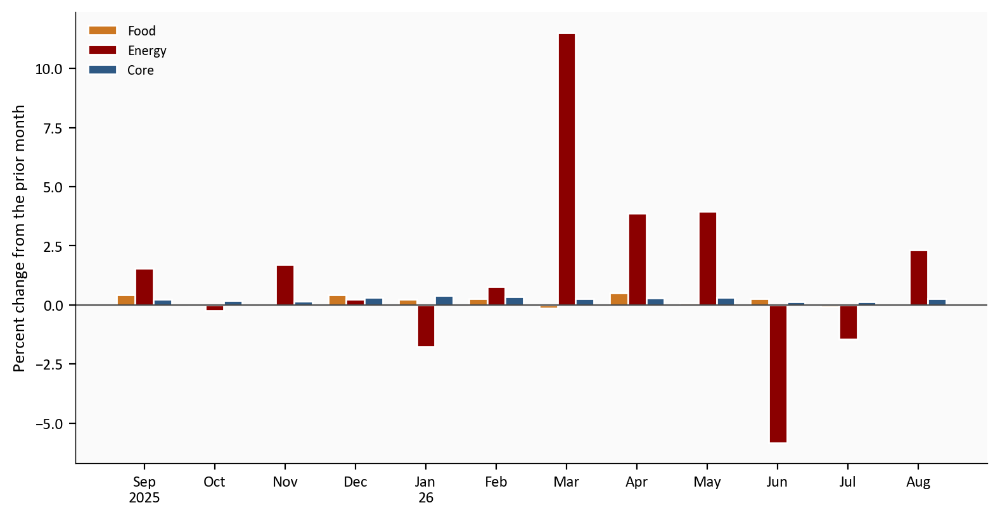
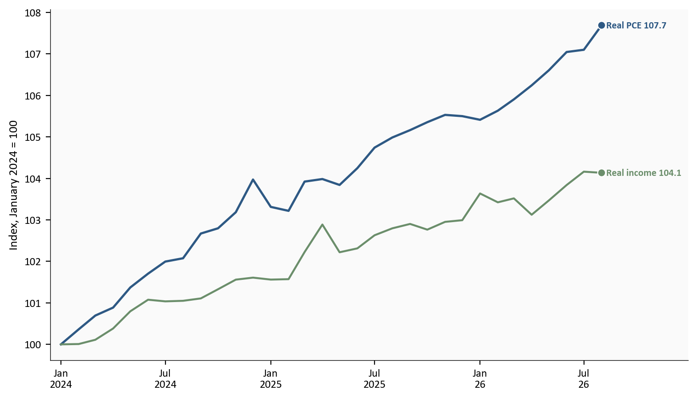
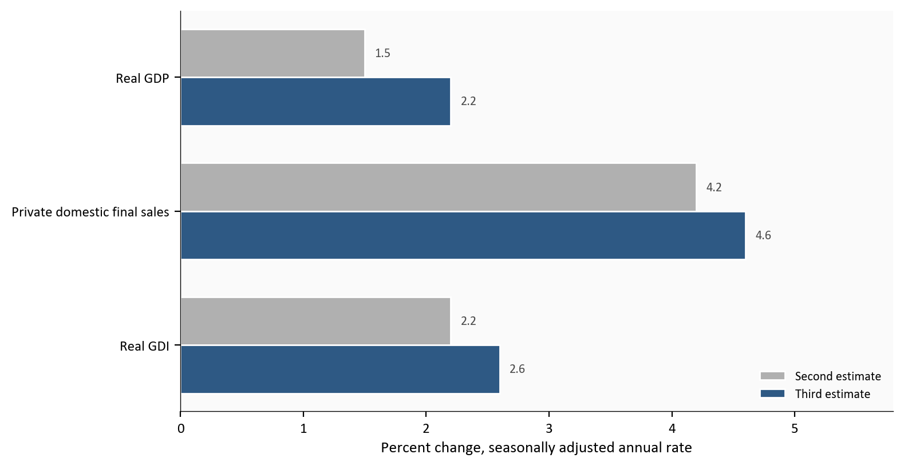
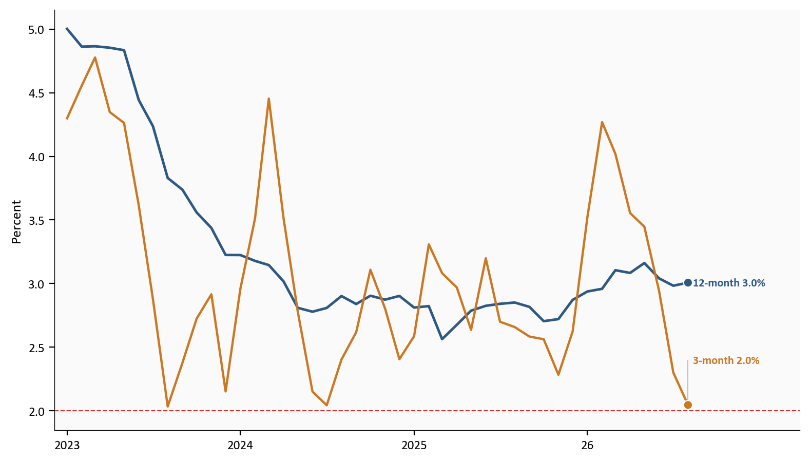

Core PCE, year over year
3.0%
August
Headline PCE, year over year
3.4%
August
Real PCE, August
+0.6%
month change
Q2 real GDP, third
2.2%
annualized
August 26 personal income and outlays and the Q2 third estimate, released 9/30/26. Source: BEA.
Yoram Gilboa
October 10, 2026
The lower core PCE path is a new ruler on the same economy. On 9/30/26 the Bureau of Economic Analysis published the August 26 personal income report and the third estimate of second-quarter GDP, and with them this year’s annual update. The update changed three price methods and applied the new methods back to January 2021. A vintage is the version of that history published as of one date. The date is the evaluation date of the dataset. It fixes which official record you are reading, and a later BEA release is a new evaluation of the same months. Every figure below is the vintage as of 9/30/26.
BEA described the three changes in its preview of this year’s annual update. Portfolio management and investment advice services no longer take their price from the producer price index for that industry. BEA now estimates the quantity with a Bureau of Labor Statistics payroll series, and the price is what remains after that quantity is removed from nominal spending. Legal services no longer use the consumer price index. That index was last published for September 2024, and the unpublished values BEA had been using did not meet Bureau of Labor Statistics quality guidelines. The replacement, beginning in 2024, is a composite of producer price indexes for household legal services. Computer software and accessories no longer use the consumer price index alone. The replacement blends that index with producer price indexes for game software and for information-technology infrastructure.
RBC Economics put magnitudes on that preview before the release. The three changes together were expected to lower the annual core rate by 18 basis points, taking July 26 core from 3.3% to 3.1%. Portfolio management was the small slice. RBC had the old deflator averaging 14.1% over the year since December 2023, and the implied new index averaging 12.3%. At a weight of 1.7% of core, that difference was about 3 basis points of the core rate. In this file, July 26 core then moved from 3.30% to 2.98%, a gap of 32 basis points. That gap is larger than the whole preview. BEA does not assign it to portfolio management.
Morning coverage led with the headline revisions. Reuters reported second-quarter real GDP of 2.2%, revised up 0.7 percentage point from 1.5%, alongside the new inflation rates. The PCE price index measures the prices people pay for goods and services, including purchases made on their behalf. Core PCE is that index without food and energy. In August 26, core PCE is 3.0% over the year and rose 0.2% on the month. Headline PCE rose 0.3% on the month and 3.4% over the year.
The year rate moved because earlier months were remeasured. On the prior release, core inflation in July 26 was 3.3% over the year. On this vintage it is 3.0%. Headline inflation for that month is 3.4%, compared with 3.7% before. That gap is a level shift in the rewritten history. The August 26 month change is the new price observation, and the three-month core pace on this vintage is 2.0%. BEA’s news release does not split that core revision into a methodology share and a source-data share.
A same-day account of fed-funds futures marked down a hike at the 10/28/26 meeting and left a later meeting this year as the more likely date of the next increase. Those odds are not in this snapshot. The same preview said the regional accounts would begin their annual update that day for the first time. The national update and the GDP third estimate were published together. The release also closed the setup this blog left open on 9/26/26.
The figures below are drawn from the committed snapshot for the 9/30/26 release. To rebuild them from this folder, run scripts/01_fetch_data.py, then scripts/02_clean_data.py, then scripts/04_compute_stats.py. The first script checks the saved FRED files and does not download a new vintage. Monthly history runs through August 26. The July 26 rates from the earlier release, and the second-estimate columns in the GDP chart, are copied from the BEA pages linked in the notes. Data come from the Bureau of Economic Analysis by way of FRED.
The charts use the committed FRED snapshot in this folder. Rebuilding checks that snapshot and does not download a later vintage. Current FRED does not keep the pre-update path. The previously published year rates for July 26, the earlier real-spending print, and the earlier saving rate are copied from the personal-income release for that month. Second-estimate GDP, private domestic final sales, and real gross domestic income are copied from the third-estimate comparison table. Food, energy, and core month changes are each index’s own change. They do not add up to the headline change. The quarterly PCE price rates in the growth section are annualized quarter-to-quarter rates. They are a different statistic from the monthly year rates. BEA’s news release does not assign a basis-point share of the core revision to the three price methods. The method descriptions are the Bureau’s preview, not a contribution table. The RBC basis points, the old portfolio deflator, and the implied new index are transcribed from that pre-release note. They are not BEA prints. The July core gap in basis points is the prior one-decimal rate minus the updated hundredths in this file. The August 26 saving rate and the saving rate published for July 26 before this release are different vintages.
August 26 personal income and outlays and the Q2 third estimate, released 9/30/26. Source: BEA.
Each line is the percent change from the same month a year earlier. Headline is the full price index. Core is that index without food and energy. At the right edge, in August 26, headline is 3.4% and core is 3.0%. Both lines are only the vintage as of 9/30/26. They do not draw the path as it stood before the annual update.
The table is the level shift. July 26 has two evaluation dates. The earlier release was published to one decimal. The other columns keep the hundredths, so July 26 now and August 26 are not the same figure. They still match when rounded to one decimal. The first two columns are the rewrite of one month. The third column is the new month on the new ruler.
| July 26 earlier | July 26 now | August 26 | |
|---|---|---|---|
| Headline | 3.70% | 3.36% | 3.42% |
| Core | 3.30% | 2.98% | 3.01% |
The dashed line is the Fed’s 2% aim. Both year rates are still above it. The chart ends in August 26.
# The year rates are already in the cleaned monthly file. This cell draws them.
yoy = pd.read_csv(CLEAN_DIR / "pce_monthly.csv", index_col="date", parse_dates=True)
yoy = monthly_calendar(yoy, "2023-01-01", "2026-08-01", ["pce_price_yoy", "core_price_yoy"])
fig, ax = plt.subplots(figsize=(8.0, 4.6))
ax.plot(yoy.index, yoy["pce_price_yoy"], color=COLORS["primary"], linewidth=1.8, zorder=3)
ax.plot(yoy.index, yoy["core_price_yoy"], color=COLORS["secondary"], linewidth=1.6, zorder=3)
ax.axhline(
stats["fed_target"],
color=COLORS["fed_target"],
linestyle="--",
linewidth=0.8,
alpha=0.8,
zorder=2,
)
ax.text(
yoy.index[2],
stats["fed_target"] + 0.15,
f"Fed {fmt(stats['fed_target'])}% aim",
color=COLORS["fed_target"],
fontsize=8,
alpha=0.8,
)
last_x = yoy.index[-1]
ax.scatter(
[last_x, last_x],
[yoy["pce_price_yoy"].iloc[-1], yoy["core_price_yoy"].iloc[-1]],
s=40,
color=[COLORS["primary"], COLORS["secondary"]],
zorder=5,
edgecolors="white",
linewidth=0.8,
)
span = last_x - yoy.index[0]
ax.set_xlim(yoy.index[0] - span * 0.02, last_x + span * 0.14)
label_endpoints(
ax,
[
{
"x": last_x,
"y": yoy["pce_price_yoy"].iloc[-1],
"text": f"Headline {yoy['pce_price_yoy'].iloc[-1]:.1f}%",
"color": COLORS["primary"],
},
{
"x": last_x,
"y": yoy["core_price_yoy"].iloc[-1],
"text": f"Core {yoy['core_price_yoy'].iloc[-1]:.1f}%",
"color": COLORS["secondary"],
},
],
)
ax.set_ylabel("Percent change from a year earlier")
year_ticks(ax, yoy.index)
plt.tight_layout()
fig.savefig(IMG_DIR / "pce-yoy.png", dpi=150, bbox_inches="tight")
Source: BEA Personal Income and Outlays, price indexes via FRED headline PCE and FRED core PCE. Prior rates from the previous personal-income release.
A year rate looks back twelve months, so the annual update can move it by rewriting earlier months. The step from July 26 to August 26 on this vintage is small next to the rewrite of July 26 itself. The next chart is the price change in August 26 by itself.
A month percent change compares this month’s price index with last month’s. Headline prices in August 26 rose 0.3%, and core prices rose 0.2%. On the updated vintage, the July 26 month rates are 0.1% for headline and 0.1% for core.
A year rate compares a month with the same month a year earlier. That is the division in the table above. From July 26 to August 26, the new month enters that twelve-month window and August 2025 drops out. The year rate changes by the new month’s price change minus the price change in the month that drops out. For headline prices, August 26 rose 0.31% and August 2025 rose 0.25%, so the year rate moves by 0.06 percentage point, from 3.36% to 3.42%. Core is calculated the same way. In the table its year rate goes from 2.98% to 3.01%. That arithmetic stays on one vintage. It is separate from the level shift between the first two columns.
Food prices were 0.0% on the month. Energy goods and services prices rose 2.3%. Those two series are chain-type price indexes of their own. Adding them to core does not recover the headline 0.3%, and the chart does not stack them. Within August 26, energy is the large bar. Core’s 0.2% is the new month’s underlying print. It is separate from the year-rate rewrite in the chart above.
The bars run for the twelve months ending August 26. Across those months, energy prices range from -5.8% in June 26 to 11.5% in March 26. The 2.3% increase in August 26 is the latest reading in that range.
# The month changes are already in the cleaned price file. This cell draws them.
prices = pd.read_csv(CLEAN_DIR / "pce_price_monthly.csv", index_col="date", parse_dates=True)
prices = monthly_calendar(
prices,
"2025-09-01",
"2026-08-01",
["food_price_mom", "energy_price_mom", "core_price_mom"],
)
fig, ax = plt.subplots(figsize=(8.0, 4.2))
x = np.arange(len(prices))
width = 0.26
ax.bar(x - width, prices["food_price_mom"], width, color=COLORS["warning"], edgecolor="white", label="Food")
ax.bar(x, prices["energy_price_mom"], width, color=COLORS["accent"], edgecolor="white", label="Energy")
ax.bar(x + width, prices["core_price_mom"], width, color=COLORS["primary"], edgecolor="white", label="Core")
ax.axhline(0, color=COLORS["neutral"], linewidth=0.8)
ax.set_xticks(x)
ax.set_xticklabels(
[
short_year(d.strftime("%b\n%Y") if d.month in (1, 9) else d.strftime("%b"))
for d in prices.index
]
)
ax.set_ylabel("Percent change from the prior month")
ax.legend(frameon=False, loc="upper left")
plt.tight_layout()
fig.savefig(IMG_DIR / "pce-monthly.png", dpi=150, bbox_inches="tight")
Source: BEA Table 2.8.4 price indexes, via FRED food prices, FRED energy prices, and FRED core PCE.
Inside August 26, the inflation news is a modest core month plus a jump in energy prices. The lower year rate is the rewritten history. Spending is a separate cut of the same release.
Nominal spending is the cash-register total. Real spending removes the price change, so it is closer to the quantity households bought. Disposable personal income is income after personal current taxes. Real disposable income removes the price change from that after-tax income.
The dollar changes below are changes in seasonally adjusted annual-rate levels. They are not the dollars households spent or received during August 26 alone. The real PCE dollar change is in chained 2017 dollars. The percent changes are monthly rates.
In August 26, current-dollar PCE rose 0.9%. That is the cash-register percent change. Real PCE, the quantity, rose 0.6%, from 0.1% in revised July 26. Personal income rose 0.2%, or $66.6 billion at an annual rate. Current-dollar disposable income rose 0.3%, or $68.6 billion at an annual rate, and real disposable income was 0.0%. Households spent more in real terms in a month when real after-tax income did not rise. In annual-rate dollars, current-dollar PCE rose $190.8 billion, with goods up $114.1 billion and services up $76.7 billion. Real PCE rose $92.8 billion in chained 2017 dollars.
The lines below index both real series to January 2024 = 100, so the paths can share a scale. By August 26 the spending index is 107.7 and the after-tax income index is 104.1. The saving rate, personal saving as a share of disposable income, is not on the chart. On this vintage it was 4.1% in August 26 and 4.6% in July 26. The 3.0% figure is the July 26 rate published before the annual update. Putting 4.1% next to that older 3.0% mixes a new month with the old ruler. On the new vintage the saving rate is lower in August 26 than in July 26.
# The index is already in the cleaned file. The base month equals 100.
real = pd.read_csv(CLEAN_DIR / "real_indexes.csv", index_col="date", parse_dates=True)
real = monthly_calendar(real, "2024-01-01", "2026-08-01", ["real_pce_index", "real_dpi_index"])
fig, ax = plt.subplots(figsize=(8.0, 4.6))
ax.plot(real.index, real["real_pce_index"], color=COLORS["primary"], linewidth=1.8, zorder=3)
ax.plot(real.index, real["real_dpi_index"], color=COLORS["secondary"], linewidth=1.6, zorder=3)
last_x = real.index[-1]
ax.scatter(
[last_x, last_x],
[real["real_pce_index"].iloc[-1], real["real_dpi_index"].iloc[-1]],
s=40,
color=[COLORS["primary"], COLORS["secondary"]],
zorder=5,
edgecolors="white",
linewidth=0.8,
)
span = last_x - real.index[0]
ax.set_xlim(real.index[0] - span * 0.02, last_x + span * 0.16)
label_endpoints(
ax,
[
{
"x": last_x,
"y": real["real_pce_index"].iloc[-1],
"text": f"Real PCE {real['real_pce_index'].iloc[-1]:.1f}",
"color": COLORS["primary"],
},
{
"x": last_x,
"y": real["real_dpi_index"].iloc[-1],
"text": f"Real income {real['real_dpi_index'].iloc[-1]:.1f}",
"color": COLORS["secondary"],
},
],
)
ax.set_ylabel(f"Index, {stats['index_base']} = 100")
half_year_ticks(ax, real.index)
plt.tight_layout()
fig.savefig(IMG_DIR / "real-spending-income.png", dpi=150, bbox_inches="tight")
Source: BEA Personal Income and Outlays, via FRED real PCE and FRED real disposable income.
Real spending rose in a month when real after-tax income did not. The quarterly estimates were revised up, and BEA’s notes name where that extra growth came from.
The chart compares the second and third estimates for real GDP, private domestic final sales, and real gross domestic income. Those are the aggregate growth rates in BEA’s comparison table.
Real GDP was revised from 1.5% to 2.2%. The advance estimate had also been 1.5%. Real final sales to private domestic purchasers, household consumption plus private fixed investment, went from 4.2% to 4.6%. The advance reading of that measure was 3.9%. Real gross domestic income, the income-side twin of GDP, went from 2.2% to 2.6%.
BEA attributes that 0.7 percentage point primarily to investment, consumer spending, and government spending. Investment includes both inventories and fixed investment.
Nonresidential structures led the fixed-investment revision. BEA names commercial and health care construction, mainly data centers, from revised Census construction data for May and June. That is the data-center buildout inside this GDP table. It is a revision to construction put in place. Energy prices are the other reading of that buildout in this post: energy goods and services rose 2.3% in August 26. One line is building spending. The other is a price index.
Outside that structures line, residential investment was led by improvements, on revised remodeler payrolls. Consumer services were led by recreation, including spectator amusements, and by social and religious services, partly offset by lower air transportation. Goods were led by recreational goods and vehicles, including information processing equipment. The government piece was mainly federal defense. BEA ties that defense revision to updated seasonal adjustment factors, so it is a statistical artifact in the seasonal pattern rather than a new round of spending.
Two price rates in that same table are easy to mix up with the monthly path. The quarterly PCE price index rose at a 5.0% annual rate, revised down 0.3 percentage point from 5.3%. Core was 3.3%, revised down the same 0.3 percentage point from 3.6%. Those are quarter-to-quarter annualized rates for the spring quarter. The August 26 year rates are 3.4% and 3.0%.
First-quarter real GDP is now 2.5%, an upward revision of 0.4 percentage point, primarily from services exports and from consumer spending on goods and services. The GDP update covers the first quarter of 2021 through the first quarter of 26. The reference year remains 2017.
# Second-estimate values are copied from the BEA comparison table.
# Third-estimate GDP and private final sales are the latest FRED vintage.
revision = pd.read_csv(CLEAN_DIR / "q2_revision.csv")
order = revision.iloc[::-1].reset_index(drop=True)
y = np.arange(len(order))
height = 0.36
fig, ax = plt.subplots(figsize=(8.0, 4.2))
ax.barh(
y + height / 2,
order["second"],
height=height,
color=COLORS["light"],
edgecolor="white",
label="Second estimate",
)
ax.barh(
y - height / 2,
order["third"],
height=height,
color=COLORS["primary"],
edgecolor="white",
label="Third estimate",
)
for i, row in order.iterrows():
ax.text(row["second"] + 0.08, i + height / 2, f"{row['second']:.1f}", fontsize=8, color=COLORS["neutral"], va="center")
ax.text(row["third"] + 0.08, i - height / 2, f"{row['third']:.1f}", fontsize=8, color=COLORS["neutral"], va="center")
ax.set_yticks(y)
ax.set_yticklabels(order["measure"])
ax.set_xlabel("Percent change, seasonally adjusted annual rate")
ax.set_xlim(0, max(order["second"].max(), order["third"].max()) + 1.2)
ax.legend(frameon=False, loc="lower right")
plt.tight_layout()
fig.savefig(IMG_DIR / "q2-revision.png", dpi=150, bbox_inches="tight")
Source: BEA GDP third estimate. Latest GDP and private final sales also via FRED real GDP and FRED private domestic final purchases.
Growth was revised up. The lower year rate is the new price ruler. Whether 3.0% is also the recent pace is a different cut of the same price index.
The year rate is the change over twelve months. The three-month pace compounds only the latest three months, as if that stretch had lasted a year. On the 9/30/26 vintage, core’s three-month pace is 2.0% and the twelve-month rate is 3.0%. Both lines use that vintage. The sample ends in August 26.
# The twelve-month rate and the three-month pace are already in the cleaned file.
pace = pd.read_csv(CLEAN_DIR / "core_pace.csv", index_col="date", parse_dates=True)
pace = monthly_calendar(pace, "2023-01-01", "2026-08-01", ["core_price_yoy", "core_3m"])
fig, ax = plt.subplots(figsize=(8.0, 4.6))
ax.plot(pace.index, pace["core_price_yoy"], color=COLORS["primary"], linewidth=1.8, zorder=3)
ax.plot(pace.index, pace["core_3m"], color=COLORS["warning"], linewidth=1.6, zorder=3)
ax.axhline(
stats["fed_target"],
color=COLORS["fed_target"],
linestyle="--",
linewidth=0.8,
alpha=0.8,
)
last_x = pace.index[-1]
ax.scatter(
[last_x, last_x],
[pace["core_price_yoy"].iloc[-1], pace["core_3m"].iloc[-1]],
s=40,
color=[COLORS["primary"], COLORS["warning"]],
zorder=5,
edgecolors="white",
linewidth=0.8,
)
span = last_x - pace.index[0]
ax.set_xlim(pace.index[0] - span * 0.02, last_x + span * 0.18)
y_12 = float(pace["core_price_yoy"].iloc[-1])
y_3m = float(pace["core_3m"].iloc[-1])
label_endpoints(
ax,
[
{
"x": last_x,
"y": y_12,
"text": f"12-month {y_12:.1f}%",
"color": COLORS["primary"],
},
],
)
# The three-month pace ends on the aim line, so its label sits above the point.
label_y = y_3m + 0.35
ax.plot(
[last_x, last_x],
[y_3m, label_y],
color=COLORS["light"],
linewidth=0.6,
zorder=4,
)
ax.text(
last_x,
label_y,
f" 3-month {y_3m:.1f}%",
fontsize=8,
color=COLORS["warning"],
va="center",
fontweight="bold",
)
ax.set_ylabel("Percent")
year_ticks(ax, pace.index)
plt.tight_layout()
fig.savefig(IMG_DIR / "core-pace.png", dpi=150, bbox_inches="tight")
Source: BEA core PCE price index, via FRED.
The three-month pace sits on the 2% aim. The year rate is still 3.0%. The short line is only the latest three months on the new ruler. It does not undo the rewritten months inside the twelve-month rate.
The 9/26/26 post stopped before this print. The print is now in. Core PCE is 3.0% over the year because the annual update remeasured the history back to January 2021. The July 26 core rate moved from 3.3% to 3.0% on that new ruler. August 26 core prices rose 0.2% on the month, and the three-month pace is 2.0%. Those two are the trend reads in this file. Second-quarter real GDP is 2.2%, revised up from 1.5%. Real spending rose 0.6% in August 26.
For the Fed. On 9/16/26 the Federal Reserve set the funds rate at 3.75 to 4.00 percent. The September projections put the median for the end of 26 at 4.1%. 12 of 18 participants looked for exactly one more increase in 26. Those projections sit one quarter point above the current range’s midpoint. They were submitted before 9/30/26, and they are participant projections, not a Committee vote. This release does not rewrite them. The futures account cited above marked down a hike at the 10/28/26 meeting and left a later meeting this year as the more likely date of the next increase. The odds themselves are not in this dataset, and neither is the decision at the next meeting.
For households. The year rates, 3.0% for core and 3.4% for headline, compare August 26 with a year earlier on the new ruler. They are not a new claim that prices fell during August 26. Real after-tax income was unchanged that month, at 0.0%. Real spending rose 0.6%.
For investors. The federal funds target range remains 3.75 to 4.00 percent. Policy rates influence borrowing costs and the rates investors use to discount future cash flows. This release lowers the published inflation path because the ruler changed. It does not, by itself, change the policy setting.
None of those prints is in this post.
| Series | What this post uses it for | Source |
|---|---|---|
| PCE price index | Headline inflation, on the year chart | FRED PCEPI |
| Core PCE price index | Inflation excluding food and energy, on the year, month, and pace charts | FRED PCEPILFE |
| Food PCE price index | Food’s own monthly price change | FRED DFXARG3M086SBEA |
| Energy PCE price index | Energy goods and services monthly price change | FRED DNRGRG3M086SBEA |
| Real PCE | Quantity of spending, on the index chart | FRED PCEC96 |
| Real disposable personal income | After-tax income adjusted for prices, on the index chart | FRED DSPIC96 |
| Saving rate | Latest level and revised prior-month level, in the text only | FRED PSAVERT |
| Real GDP growth | Latest quarterly percent change, checked against the BEA table | FRED A191RL1Q225SBEA |
| Private domestic final purchases | Latest quarterly percent change for household plus business spending at home | FRED PB0000031Q225SBEA |
| Personal income and outlays | The monthly prints, dollar changes, and annual-update note | BEA personal income release |
| GDP third estimate | The second-versus-third comparison, including real GDI and the revision notes | BEA GDP third estimate |
| Annual-update price methods | The three deflator changes named in the opening | BEA preview in the Survey of Current Business |
| RBC method preview | Pre-release basis points and the portfolio deflator rates, in the text only | RBC Economics |
Data current as of 9/30/26. August personal income and outlays, and the second-quarter third estimate, both released 9/30/26.